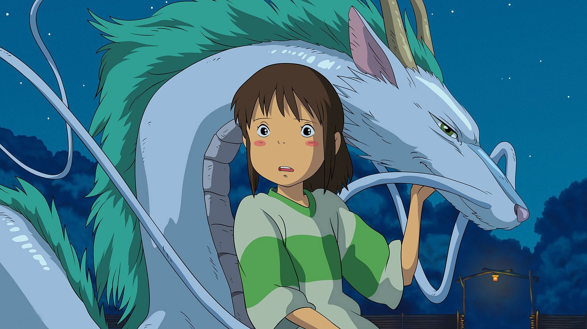

Ikke fordi der mangler kvindelige hovedpersoner, som sådan. Den første tegnefilm i spillefilmslængde havde trods alt Snehvide i hovedrollen i Disneys Snehvide og De Syv Små Dværge fra 1937, men tiderne har ændret sig og i de gamle disneyfilm var det ofte prinsessen i nød, der skulle reddes af prinsen på den hvide hest. Der er selvfølgelig mange mandlige hovedroller, måske det kan skyldes de mange mandlige overhoveder i animationsstudierne? Man vælger selvfølgelig fortællinger man selv kan relatere til, men det er vigtigt med diversitet.
Amerikanerne har måske været lidt bagud med de stærke kvindelige hovedpersoner, f.eks. var det først i 2008 med filmen Brave, at Pixar endelig kom med på banen med de kvindelige hovedpersoner, hvor den skotske prinsesse Merida sætter sig imod de gamle traditioner. Igennem historien har det været vigtigt for kvinder at bryde ud af normerne, og vise at de kan mere end at være de hjemmegående husmødre med en dominerende mand til at ordne alt.
I den nyere film The Breadwinner fra det irske Cartoon Saloon, har vi den unge Parvana, der må klæde sig ud som dreng, for at kunne tjene penge og købe mad til sin familie efter hendes far bliver sat i fængsel. Hun lever et mandsdomineret samfund, og oplever begge sider fra en pige der ikke engang kan få lov at købe nogle æbler med hjem, til en dreng, som bliver budt velkommen på markedet. Det giver også et blik ind i et samfund der stadig er meget kvindeundertrykkende, som der er steder idag der stadigvæk er.

Kvinderne bør ikke altid bare skulle reddes af prinsen, det bliver kedeligt ensformigt og gammeldags. Disneys Mulan bryder reglerne og viser at hun kan kæmpe på lige fod med mændene. Her er det hende der ender med at redde dagen.

I det japanske Studio Ghibli, har de har til gengæld et stærkt antal kvindelige hovedroller. De er stærke på hver deres måde. Selvom Ghibli har den mandlige instruktør Hayao Miyazaki i spidsen, har de stadig et væld af stærke kvindelige roller, selvom de ikke altid har hovedrollen, er de der stadig i markante roller.I Chihiro og heksene har vi f.eks. den unge pige Chihiro der lige pludselig må finde sin plads i verden efter hun bliver ladt alene tilbage da hendes forældre bliver forvandlet til grise. Gennem filmen gennemgår Chihiro en markant udvikling, mens hun prøver at holde fast i sin identitet.
Det er bedre med diversitet, der udfordrer vores måde at tænke på. Hvis vi altid bliver udsat for de sammen måder at anskue verden på, bliver vores måde at tænke verden på alt for indsnævret.
Er du interesseret i at læse mere om emnet, har vi et par artikler for dig.
Læs her en artikel om vigtigheden af kvindelige hovedroller - også for drengene
og en lidt ældre men stadig relavant dansk artikel om hvorfor måden man skildrer de kvindelige roller er vigtig
og fra et måske lidt anderledes kultursyn med en artikel om hvordan studio ghibli skiller sig ud med portrættering af kvinder